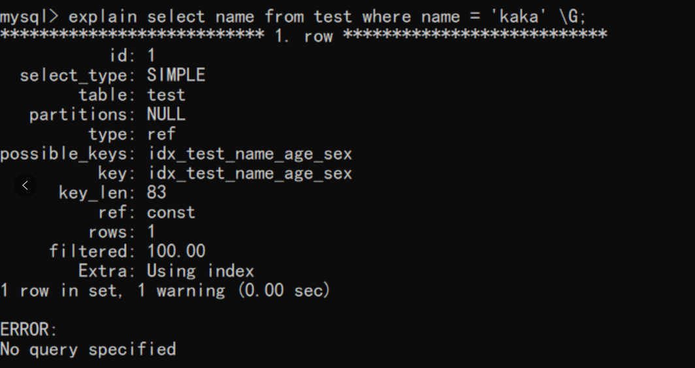
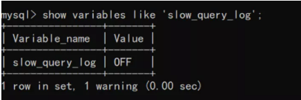
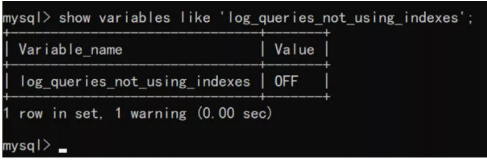
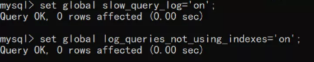
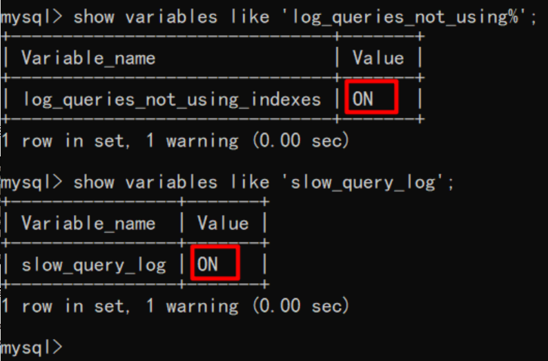
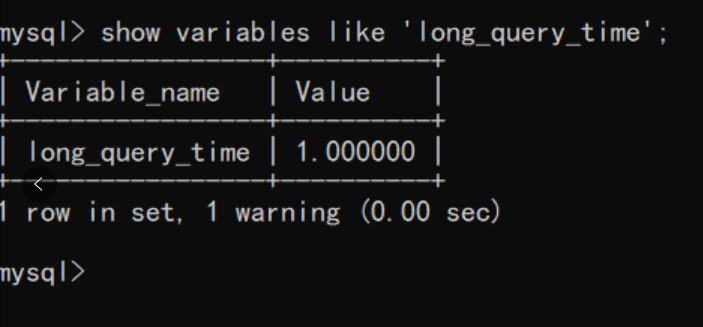
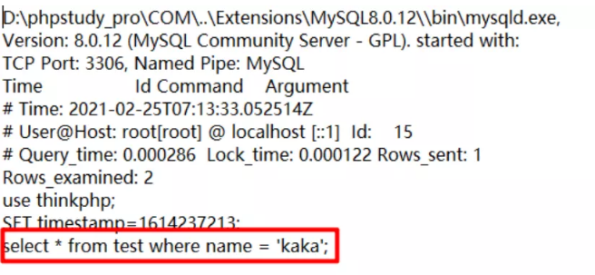

因为会MySQL查询优化，领导给我升职了
查询优化本就不是一蹴而就的，需要学会使用对应的工具、借鉴别人的经验来对 SQL 进行优化，并且提升自己
先来巩固一下索引的优点，检索数据快、查询稳定、存储具有顺序性避免服务器建立临时表、将随机的 I/O 变为有序的 I/O。
但索引一旦创建的不规范就会造成以下问题，占用额外空间，浪费内存，降低数据的增、删、改性能。
所以只有在理解索引数据结构的基础上才能创建出高效的索引。本文所有操作均在 MySQL 8.0.12。
创建索引规范
在学习索引优化之前，需要对创建索引的规范有一定的了解，此规范来自于阿里巴巴开发手册。
主键索引：pk_column_column。
唯一索引：uk_column_column。
普通索引：idx_column_column。
索引失效原因
创建索引需知道在什么情况下索引会失效，只有了解索引失效的原因，在创建索引时才不会出现一些已知错误。
带头大哥不能死
这局经典的语句就是涵盖创建索引时一定要符合最左侧原则。
例如表结构为 u_id，u_name，u_age，u_sex，u_phone，u_time，创建索引为 idx_user_name_age_sex。
查询条件必须带上 u_name 这一列。
不在索引列上做任何操作
不在索引列上做任何计算、函数、自动或者手动的类型转换，否则会进行全表扫描。简而言之不要在索引列上做任何操作。
俩边类型不等
例如建立了索引 idx_user_name，name 字段类型为 varchar。在查询时使用 where name = kaka，这样的查询方式会直接造成索引失效。
正确的用法为 where name = “kaka”。
不适当的 like 查询会导致索引失效
创建索引为 idx_user_name，执行语句为 select * from user where name like “kaka%”；可以命中索引。
执行语句为 select name from user where name like “%kaka”；可以使用到索引（仅在 8.0 以上版本）。
执行语句为 select * from user where name like ‘’%kaka”；会直接导致索引失效。
范围条件之后的索引会失效
创建索引为：idx_user_name_age_sex
执行语句
select * from user where name = ‘kaka’ and age > 11 and sex = 1;
上面这条 SQL 语句只会命中 name 和 age 索引，sex 索引会失效。复合索引失效需要查看 key_len 的长度即可。
总结：% 在后边会命令索引，当使用了覆盖索引时任何查询方式都可命中索引。
以上就是我关于索引失效会出现的原因总结，在很多文章中没有标注 MySQL 版本，所以你有可能会看到 is null 、or 索引会失效的结论。
SQL 优化杀手锏之 Explain
在写完 SQL 语句之后必须要做的一件事情就是使用 Explain 进行 SQL 语句检测，看是否命中索引。

上图就是使用 Explain 输出格式，接下来将会对输出格式进行简单的解释：
①id：这列就是查询的编号，如果查询语句中没有子查询或者联合查询这个标识就一直是 1。如存在子查询或者联合查询这个编号会自增。
②select_type：最常见的类型就是 SIMPLE 和 PRIMARY，此列知道就行了。**
**
③table：理解为表名即可。**
**
④\type：**此列是在优化 SQL 语句时最需要关注的列之一，此列显示了查询使用了何种类型。
以下排序从最优到最差：
- system：表内只有一行数据。
- const：最多只会有一条记录匹配，常用于主键或者唯一索引为条件查询。
- eq_ref：当连接使用的索引为主键和唯一时会出现。
- ref：使用普通索引 = 或 <=> 运算符进行比较将会出现。
- fulltext：使用全文索引。
- ref_or_null：跟 ref 类型类似，只是增加了 null 值的判断，实际用的不多。语句为 where name = ‘kaka’ and name is null，name 为普通索引。
- index_merge：查询语句使用了俩个以上的索引，常见在使用 and、or 会出现，官方文档将此类型放在 ref_or_null 之后，但是在很多的情况下由于读取索引过多性能有可能还不如 range。
- unique_subquery：用于 where 中的 in 查询，完全替换子查询，效率更高。语句为 value IN (SELECT primary_key FROM single_table WHERE some_expr)
- index_subquery：子查询中的返回结果字段组合是一个索引（或索引组合），但不是一个主键或唯一索引。
- range：索引范围查询，常见于使用 =，<>，>，>=，<，<=，IS NULL，<=>，BETWEEN，IN() 或者 like 等运算符的查询中。
- index：索引全表扫描，把索引从头到尾扫一遍。
- all：全表扫描，性能最差。
⑤possible_keys：此列显示的可能会使用到的索引。
⑥\key：**优化器从 possible_keys 中命中的索引。
⑦key_len：查询用到的索引长度（字节数），key_len 只计算 where 条件用到的索引长度，而排序和分组就算用到了索引，也不会计算到 key_len 中。
⑧ref：如果是使用的常数等值查询，这里会显示 const。
如果是连接查询，被驱动表的执行计划这里会显示驱动表的关联字段。如果是条件使用了表达式或者函数，或者条件列发生了内部隐式转换，这里可能显示为 func。
⑨\rows：**这是 MySQL 估算的需要扫描的行数（不是精确值）。这个值非常直观显示 SQL 的效率好坏, 原则上 rows 越少越好。
⑩filtered：此列表示存储引擎返回的数据在 server 层过滤后，剩下多少满足查询的记录数量的比例，注意是百分比，不是具体记录数。
⑪\extra：**在大多数情况下会出现以下几种情况。
- Using index：使用了覆盖索引，查询列都为索引字段。
- Using where：使用了 where 语句。
- Using temporary：查询结果进行排序的时候使用了一张临时表。
- Using filesort：对数据使用一个外部的索引排序。
- Using index condition：使用了索引下推。
关于索引下推可以查看我之前的一篇文章《MySQL 索引》。
总结：以上就是关于 Explain 所有列的说明，在平时开发的过程中，一般只会关注 type、key、rows、extra 这四列。
type 优化目标至少达到 range 级别，要求是 ref 级别，如果可以 consts 最好。key 是查询使用到的索引，如果此列为空，要么未建立索引，要么索引失效。
rows 是这条 SQL 语句扫描的行数，越少越好。extra：此列为扩展列，如果出现临时表、文件排序则需要优化。
SQL 优化杀手锏之慢查询
上文说到了可以直接使用 Explain 来分析自己的 SQL 语句是否合理，接下来再聊一个点那就是慢查询。
查看慢查询是否打开：

查看是否记录没有使用索引的 SQL 语句：

开启慢查询、开启记录没有使用到索引的 SQL 语句
set global log_queries_not_using_idnexes=‘on’;
set global log_queries_not_using_indexes=‘on’;

查询以上俩个配置是否打开：

设置慢查询时间，这个时间由自己把控，一般 1s 即可：
set globle long_query_time=1;
如果查看这个时间没有变，则关于客户端在重新连接一次即可。

查看慢查询存储位置：

然后随便执行一条不执行索引的语句即可在这个日志中查看到此语句：

上图中一般需要主要观察的是 Query_time、SQL 语句内容。以上就是关于如何使用慢查询来查看项目中出现问题的 SQL 语句。
优化大法
此处跟大家聊一些常用的 SQL 语句优化方案，以上的俩个工具要好好的利用，辅助我们进行打怪：
①禁止使用 select *，需要什么字段查询什么字段。
②where 字段设置索引。
③group by、order by 字段设置索引。
④舍弃 offset，limit 分页，使用延迟关联来实现分页（数据量不大时可不用）。
⑤写分页时当 count 为 0 时，直接返回避免执行分页语句。
⑥利用覆盖索引进行查询避免回表。
⑦建立复合索引时区分度最高的放在最左侧。
⑧统计数据行数只用 count(*)，别整的花里胡哨的。
⑨关于 in 和 exist，如果查询的俩个表大小一致则性能差别可忽略，如果子查询表大用 exist，否则使用 in。
⑩查询一行数据时加上 limit 1。
⑪选择合理的数据类型，在满足条件下数据类型越小越好。
⑫联合查询 join 最多三个表，并且需要 join 的字段数据类型保持一致。
⑬in 操作能避免尽量避免，无法避免的情况下 in 元素控制在 1000 以内。
⑭数据更新频繁，区分度不高的列不适合建立索引。
⑮explain 中的 type 至少要达到 range，要求为 ref。
⑯联合索引满足最左侧原则。